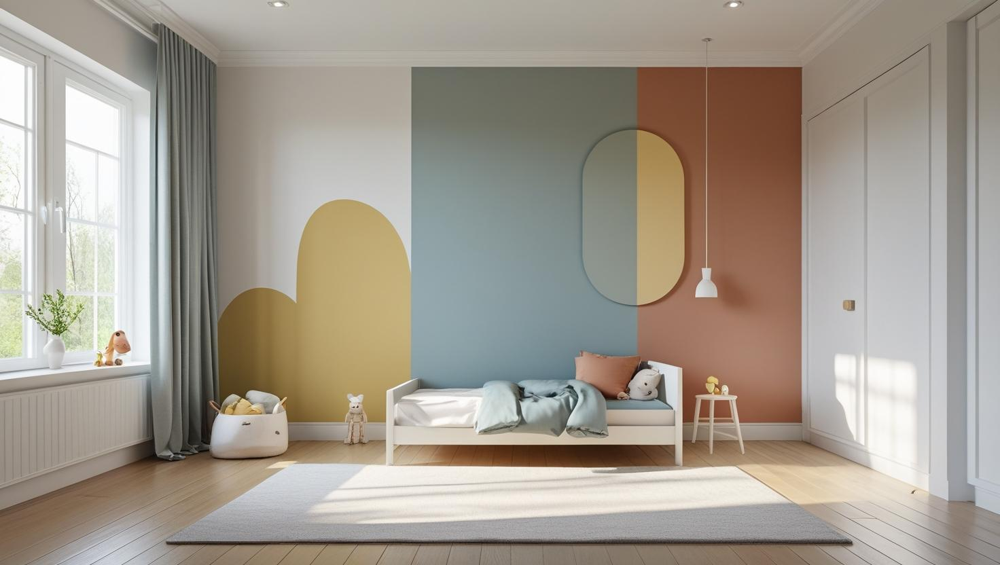
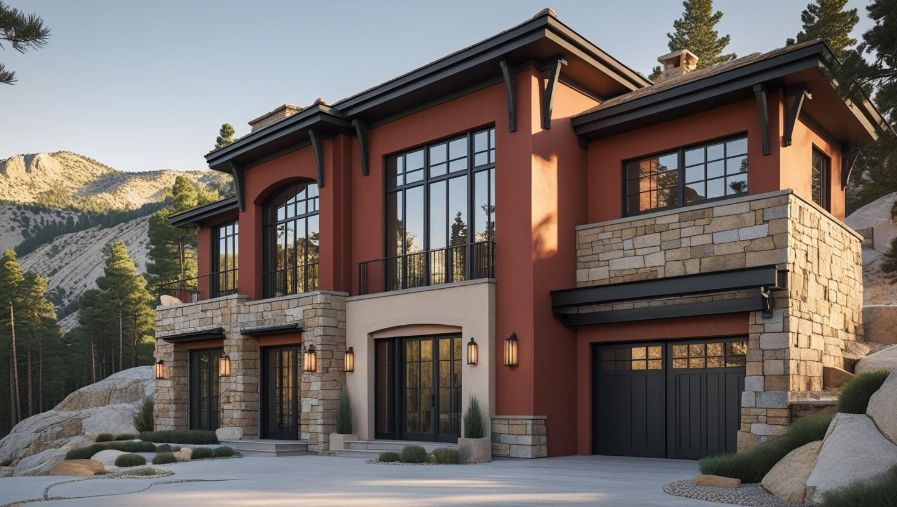
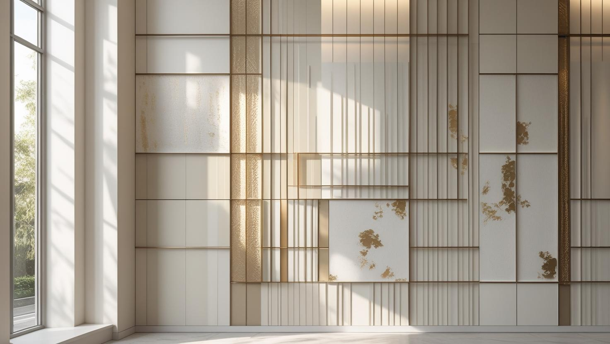

İstanbul Çamlıca Profesyonel Boya Ustası
Çamlıca'daki müstakil ev, az katlı apartman ve site dairelerinde boya işine, rüzgârlı yağış alan cephelerdeki çatlak ve su izini kontrol ederek başlıyoruz. İç ve dış cepheyi 20 yıllık tecrübemizle birlikte planlıyoruz.
Çamlıca'da Boya Badana: Tepe Konutları ve Nem Yükü
Çamlıca boyacı talebi Üsküdar'a bağlı bu semtin tepe yerleşimi ve karma konut dokusundan şekilleniyor. Müstakil ev ve az katlı konutun yanında apartman ve site stoğu bulunuyor.
Tepe konumu ve yeşil doku, havadaki nem oranını yükseltiyor. Gölge alan ve kuzeye bakan cephelerde bu, yüzeyde küf ve yeşillenme eğilimi olarak görülebiliyor; bu cephelerde temizlik ve doğru astar boya seçiminden daha belirleyici.
Yokuşlu ve dar sokaklarda araç yanaşma ile malzeme taşıma, işin gün sayısına yansıyan gerçek kalemler. Çamlıca boya ustası keşfinde adresi yerinde görüyoruz.
Hizmetlerimiz

İç Mekan Boyama
Çamlıca'da iç cephe boyası ev yaşanırken yapılacaksa oda sırası ve mobilya düzeniyle birlikte planlanır. Rüzgâr alan cephelere bakan odalarda duvardaki su izi ve kabarma, renk seçiminden önce kontrol edilir.
- Oda sırasına göre uygulama
- Yağış kaynaklı leke kontrolü
- Tavandaki lekelerin kapatılması
- Pervaz ve kapı boyası

Dış Cephe Boyama
Tepe konumundaki binalarda rüzgârla gelen yağış, cephedeki kılcal çatlaklardan içeri su girmesine yol açabilir. Bu yüzden Çamlıca'da dış cephe boyasından önce çatlaklar, denizlikler ve balkon altları gibi su toplayan noktalar kontrol edilir.
- Kılcal çatlak dolgusu
- Denizlik ve balkon altı kontrolü
- Su itici dış cephe boyası
- Kuzey cephesi temizliği

Dekoratif Boyama
Çamlıca'daki müstakil ev ve villalarda giriş holü, merdiven duvarı ya da salonun tek bir duvarı dekoratif boya için uygun alanlardır. Doku ve efekt uygulamaları, düz boyaya göre daha özenli yüzey hazırlığı gerektirir.
- Giriş holü ve merdiven duvarı
- Tek duvarda doku uygulaması
- Eskitme ve patina efekti
- Kartonpiyerli tavan boyası
Fiyat Tablosu
| Hizmet Türü | Metrekare Fiyatı | Ortalama Süre (100m²) | Garanti |
|---|---|---|---|
| İç Cephe Boyama | 100-200 TL | 2-3 Gün | Uygulama kapsamına göre |
| Dış Cephe Boyama | 150-280 TL | 3-5 Gün | Uygulama kapsamına göre |
| Dekoratif Boyama | 250-500 TL | 4-7 Gün | Uygulama kapsamına göre |
| Ofis Boyama | 120-220 TL | 2-4 Gün | Uygulama kapsamına göre |
Metrekare fiyatları yaklaşık ön değerlendirme aralığıdır. Uygulanacak ölçüm yöntemi, boyanacak alanın kapsamı, yüzey durumu, tamirat ihtiyacı, kat sayısı ve malzeme seçimi keşif sırasında netleştirilir.
Dış cephe boya fiyatları uygulama alanı için yaklaşık 150–280 TL/m² aralığındadır. Kesin hesaplama yöntemi ve teklif; yüzey durumu, bina yüksekliği, erişim veya iskele ihtiyacı, tamirat kapsamı, boya sistemi ve uygulanacak kat sayısına göre keşif sırasında netleştirilir.
Uygulama kapsamına göre işçilik garantisi sağlanır. Garanti kapsamı ve istisnaları teklif veya iş sözleşmesinde belirtilir.
Bu rakamlar İstanbul Boyacılık'ın 2026 gösterge fiyat aralığıdır. Bir piyasa ortalaması değildir. Kesin fiyat; yüzey durumu, hazırlık ve tamirat miktarı, uygulanacak kat sayısı, seçilen malzeme sınıfı, ulaşım ve kat koşulları ile evin eşyalı mı boş mu olduğu keşifte görüldükten sonra belirlenir.
Çamlıca'da kapsamı büyüten kalemler gölge ve nem alan cephelerde çıkan temizlik ve hazırlık işi, dış cephenin devreye girmesi ve yokuşlu sokakta malzeme taşıma.
Çamlıca Tepesinde Rüzgârlı Yağış Alan Cephelerde Çatlak ve Su Girişi
Çamlıca'nın tepe kesimlerinde rüzgâra açık cepheler, yağışı yalnız yukarıdan değil yandan da alır. Cephedeki kılcal çatlaklardan giren su önce iç duvarlarda leke ve kabarma olarak görünür; bu yüzden boya işinin ilk adımı suyun girdiği noktaları bulmaktır.
- Çatlaklar: Sıvadaki kılcal çatlaklar açılıp esnek dolguyla kapatılır; geniş ve derin çatlaklarda sıva tamiri yapılır.
- Denizlik ve söveler: Pencere denizliklerinin eğimi ve damlalıkları kontrol edilir; suyu duvara yönlendiren noktaların boyadan önce onarılması gerekir.
- Uygulama günü: Rüzgârlı havada boya yüzeyde hızlı kuruyup iz bırakabileceği için tepe konumundaki cephelerde uygulama sakin günlere göre planlanır.
İç duvardaki leke dıştan gelen suyla oluşmuşsa yalnız iç yüzeyi boyamak kalıcı olmaz; önce cephe tarafı onarılır, duvar kuruduktan sonra içeride boyaya geçilir. Bu nedenle keşifte içerideki lekenin dışarıda hangi cepheye denk geldiğine birlikte bakılır.
Çamlıca'daki Az Katlı Apartmanlarda Merdiven Boşluğu ve Giriş Holü Boyası
Az katlı apartmanlarda merdiven boşluğu ve giriş holü, bina sakinlerinin her gün kullandığı ortak alanlardır. Boya kararı genellikle apartman yönetimiyle birlikte alınır ve iş, sakinlerin geçişini kapatmayacak şekilde kat kat ilerler.
- Çalışma üst kattan başlayıp giriş katına doğru ilerler; gün sonunda geçiş yolu açık ve temiz bırakılır.
- Tırabzan, daire kapıları, zil paneli ve posta kutuları bantlanarak korunur.
- Elle temas edilen yüksekliğe kadar silinebilir boya, üst bölümde ve tavanda mat boya kullanılabilir.
- Kokunun merdiven boşluğunda birikmemesi için merdiven ya da çatı penceresi açık tutulur.
Merdiven boşluğu boyasının maliyetini belirleyen kalemleri apartman merdiveni boyama fiyatları rehberimizde bulabilirsiniz.
Manzaraya Bakan Geniş Pencereli Odalarda Renk ve Parlaklık Seçimi
Çamlıca'da manzaraya bakan geniş pencereli bir salonda duvar rengi, gün içinde değişen ışık nedeniyle katalogda göründüğünden farklı algılanır. Rengi ve parlaklığı seçerken odanın hangi yöne baktığını hesaba katmak, sonradan yeniden boyama ihtiyacını azaltır.
- Kuzey ışığı: Kuzeye bakan odalarda ışık daha soğuk görünür; sıcak alt tonlu açık renkler odayı dengeler.
- Güney ve batı ışığı: Güçlü öğleden sonra ışığı koyu renkleri ağır, çok açık renkleri ise parlak gösterebilir.
- Pencere karşısındaki duvar: Işığı doğrudan alan duvarda parlak bitiş rulo izlerini ve küçük pürüzleri belirginleştirir; bu duvarlarda mat ya da ipek mat daha sakin görünür.
- Yeşil doku: Ağaçlara bakan pencerelerden gelen ışık, beyaz ve açık gri duvarlarda hafif yeşil bir yansıma yaratabilir.
Parlaklık düzeyleri arasındaki farkı mat, saten ve parlak boya karşılaştırmamızda ayrıntılı anlattık.
Çamlıca Boyacı Yorumları – Gerçek Müşteri Deneyimleri
"İstanbul Çamlıca'da evimi boyatmak için İstanbul Boyacılık ekibiyle çalıştım. İç cephe boyama hizmeti gerçekten profesyoneldi. Zamanında teslim ve tertemiz işçilik için teşekkür ederim. Çamlıca boya ustası arayanlara kesinlikle tavsiye ederim."
Ahmet Yılmaz
Ataşehir / İstanbul
"Enes Bey sayesinde İstanbul’da boya badana işlerimiz Baran Bey ve Barış Bey'in eliyle tam istediğimiz gibi oldu. Hem hızlı hem planlı ve nitelikli çalışıyorlar. Çamlıca'da kaliteli boyacı arayanlar için çok iyi bir adres."
Esma Aldoğan
Şişli / İstanbul
"Çamlıca dış cephe boyama ve Bina Boyama konusunda titiz bir işçilik sergilediler. Evimizin dış cephesi yepyeni oldu. Kullanılan malzemeler kaliteli, ustalar işinin ehli. Garantili boyacı hizmeti istiyorsanız kesinlikle öneririm."
Soner DOĞAN
Beşiktaş / İstanbul
Faydalı Bağlantılar
Çamlıca bölgesinde premium iç cephe veya dekoratif boya planlıyorsanız fiyat, metrekare hesabı ve marka seçimi rehberlerini birlikte incelemek daha sağlıklı karar verir.
Çamlıca'daki Evler İçin Boya Soruları
Balkon tavanında kabaran ve dökülen boya neden tekrar ediyor?
Genellikle üst balkondan ya da balkon zemininden süzülen su, alt balkonun tavanında birikerek boyayı kabartır. Su gelmeye devam ettiği sürece yeni boya da aynı yerden dökülür; bu yüzden önce su yolunun kapatılması ve tavanın kuruması beklenir, ardından gevşeyen sıva kazınıp astar ve dış cepheye uygun boya uygulanır.
Az katlı apartmanda yalnız kendi dairemin dış cephesini boyatabilir miyim?
Az katlı bir apartmanda cephe bütün binanın ortak parçasıdır. Yalnız bir dairenin hizasını boyatmak ya da farklı bir renk seçmek için önce yönetimle görüşmeniz ve yönetim planına göre diğer maliklerin onayını almanız gerekebilir; onay çıktıktan sonra yalnız o bölüm için keşif yapılabilir.
Müstakil evde iç ve dış cephe birlikte yapılabilir mi?
Yapılabilir. Çamlıca'nın tepe kesimlerinde dış cephe uygulaması rüzgârlı ya da yağışlı günlerde durabileceği için bu günler iç mekân işlerine ayrılır; böylece iki iş birbirini beklemeden ilerler. Dışarıdan su alan bir duvarın iç yüzü ise cephe onarılıp duvar kuruyana kadar boyanmaz.
Koruya yakın evde yeni dış cephe boyasına polen ve böcek yapışır mı?
Boya yüzeyi kuruyana kadar yapışkan kaldığı için Çamlıca'da koruya ve ağaçlık alana yakın cephelerde polen, yaprak parçası ve küçük böcekler yüzeye tutunabilir. Bu riski azaltmak için uygulama saatleri yüzeyin akşam nemi başlamadan kuruyabileceği şekilde seçilir, yoğun polen günlerinde dış cephe uygulaması ertelenebilir; boya tamamen kuruduktan sonra yüzeydeki parçaların çoğu yumuşak bir fırçayla alınabilir.
Yokuşlu sokakta malzeme taşıma sorun oluyor mu?
Dar ve yokuşlu sokaklarda aracın kapıya yanaşamaması ya da park yeri bulunmaması, malzemenin elle taşınmasını gerektirebilir. Keşifte aracın nereye bırakılacağı ve malzemenin hangi girişten taşınacağı belirlenir; taşımanın işe etkisi teklifte baştan gösterilir.
İletişim
İletişim Bilgileri
Telefon: 0507 832 29 12
E-posta: boyaustamistanbul@gmail.com
10+ Uzman Ustamızla Çamlıca ve çevresine hizmet veriyoruz.
Çalışma Saatleri: Pzt-Cmt 00:00-23:59